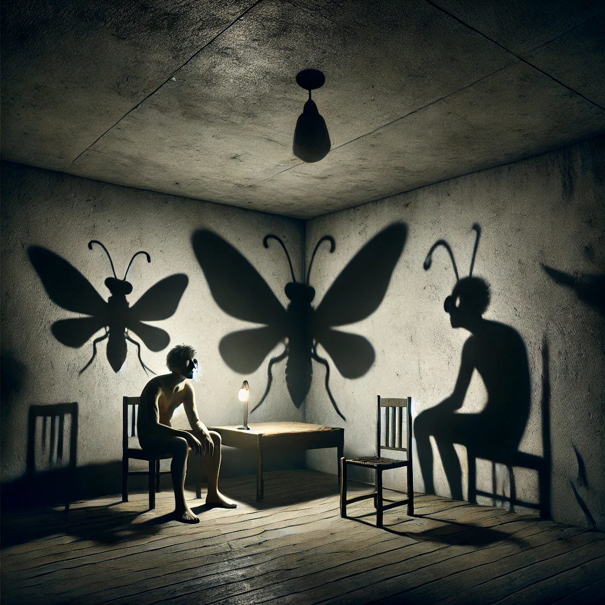
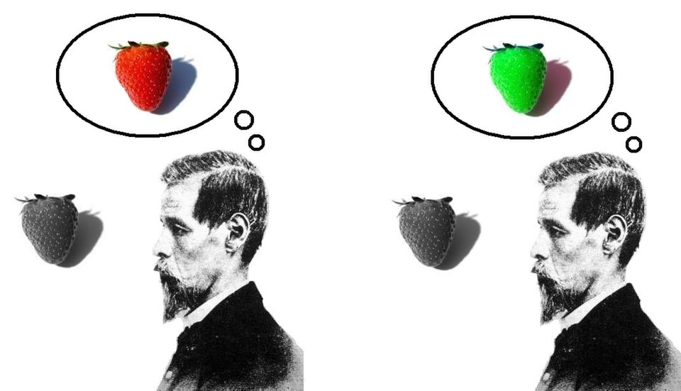

There are experiences in life which transcends all other experiences. I want to tackle the impossible challenge of explaining my transformation journey in Norway 2023.
The Challenge of Explaining Transformation
Back in 2023, while I sat down listening to my Jazz Soul Cafe playlist I thought of ways to put my journey into writing. I finally had something to write about. After all, I write to capture the sublime in my world. This transformation changed my path in life, nothing is more sublime than that.
Thus, the more frustrating it became when I couldn’t put my thoughts into writing. On multiple nights I deleted sentence after sentence in frustration. The rhythm of the songs never reached my fingers on the keyboard. It was a constant battle to write down what made it so special, without sounding like a cliche. I want to put this profound experience in writing, I want to share this with everyone. 2023 turned into 2024, and now I see 2025 creeping up. And nothing is happening. How do you put into words an experience that changed you so deeply that you’re no longer the same person?

I cannot make you understand. I cannot make anyone understand what is happening inside me. I cannot even explain it to myself.1
The Fluidity of Memory
As I pick up this draft to work on it, I notice that my mind has put a layer of dust over the original words. It makes me wonder, can I even retrieve how my mind looked like before my current self? Our memories seem to be a dynamic in nature, by recalling it we subtly influence it by who we are in the moment. Memory is like a photograph that changes with each viewing.
The perception of how we view the event are an internal process, and if you go to therapy, you know the usual treatment is to change these processes. Cognitive behavioral therapy is nothing more than framing experiences in a different light. Eye movement desensitization and reprocessing focuses on sensory stimulation rather than the trauma to help process emotions. The whole of psychology is built on the fundamental assumption that internal processes can be altered, that is why the same event can have such different consequences for different persons. But wouldn’t the same be true for one person in two different time points? A transformation by definition creates a new version of you but its profoundness is mostly felt by the old you. That is why the new me now has this impossible task.
Communicating Qualia
Adding to that, a transformation is inherently a quale2, a deeply personal, subjective experience. These are moments of subjective experience, like the way one person might see the color red differently from another. It is impossible to explain the redness of red, which might leave the possibility open that we are seeing different colors but still describing it the same. My favorite example however is one performed by Stratton3, in which he wore special glasses that caused the world to be upside down. But after a few days and probably a lot of stumbling around, his view adapted and everything appeared upright to him again. This shows how our perception can play all kind of tricks to make us think everything we see is ‘normal’, the same as everyone else. While you can use analogies or descriptions, it will never be a complete description of an experience. According to the philosophy of mind, qualia are something that cannot be communicated by definition.
|  |
The Creator-Audience Paradox
Yet, so many people try sharing their experiences. The author going for the Nobel Prize of Literature, the painter putting his mind on canvas, the director filming the next blockbuster for the cinema, the musicians rocking on stage, and the actors with spotlights on their face in the theater. The relationship between a creator and their audience is complex. The creator tries to convey their experiences but it is not possible to get all of it across. The audience, with their own perspectives, biases, and life experiences, take this content and create their own interpretations from it.
The relationship creates an intriguing paradox: the creator’s transformed perspective and the audience’s separate interpretations never fully align, yet a shared understanding can emerge. The audience may never see transformation exactly as the creator experienced it, and the creator can’t fully control how the audience interprets their work. But in that gap between intention and interpretation, something beautiful and communal arises—a shared experience of something elusive, like glimpsing the same mountain from different sides. This act of creation is what brings value.
Realizing the limitations in communicating my transformation, it helped me put my journey better onto paper. There is a beautiful kind of freedom realizing what you want is not possible. It opens your mind to what is in front of you. Switching it up to the smooth beats by KAYTRANADA my thoughts are slowly pouring onto my screen. Transformation may be impossible to fully explain, but maybe that’s the beauty of it—it’s a mystery we’re all trying to understand, each in our own way. I invite you to join me on this journey as I attempt to put the intangible into words, one step at a time.
Footnotes
The Metamorphosis by Franz Kafka - This captures how I felt. My transformation left me feeling isolated, as though no one could truly understand what was happening within me.↩︎
Tye, Michael, “Qualia”, The Stanford Encyclopedia of Philosophy (Fall 2021 Edition), Edward N. Zalta (ed.),↩︎
“The world is upside down” – The Innsbruck Goggle Experiments of Theodor Erismann (1883–1961) and Ivo Kohler (1915–1985) - description of multiple upside down experiments, including that of Stratton↩︎